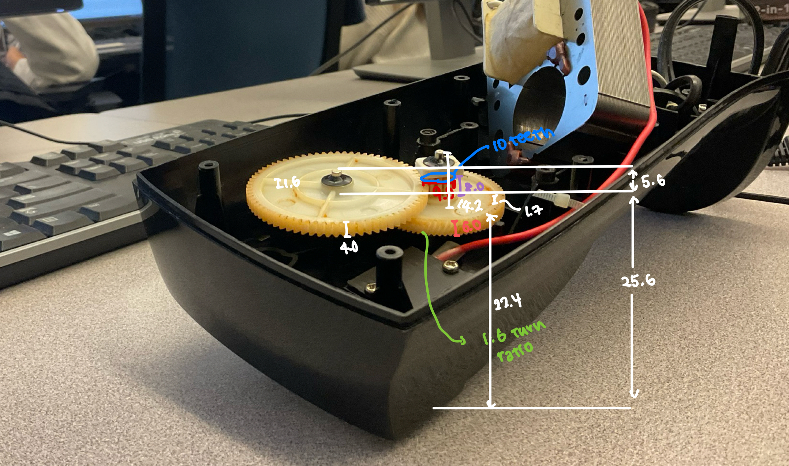
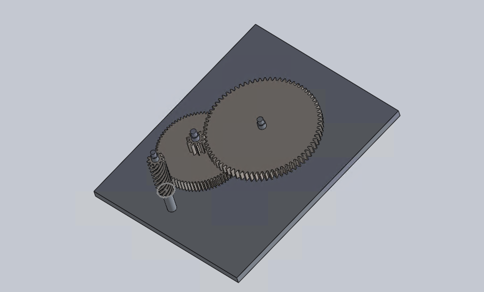
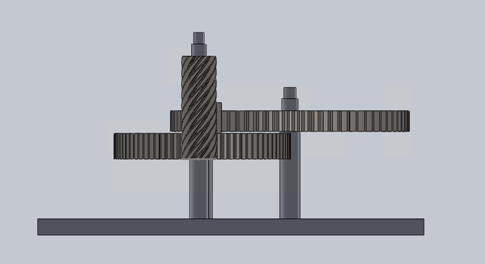
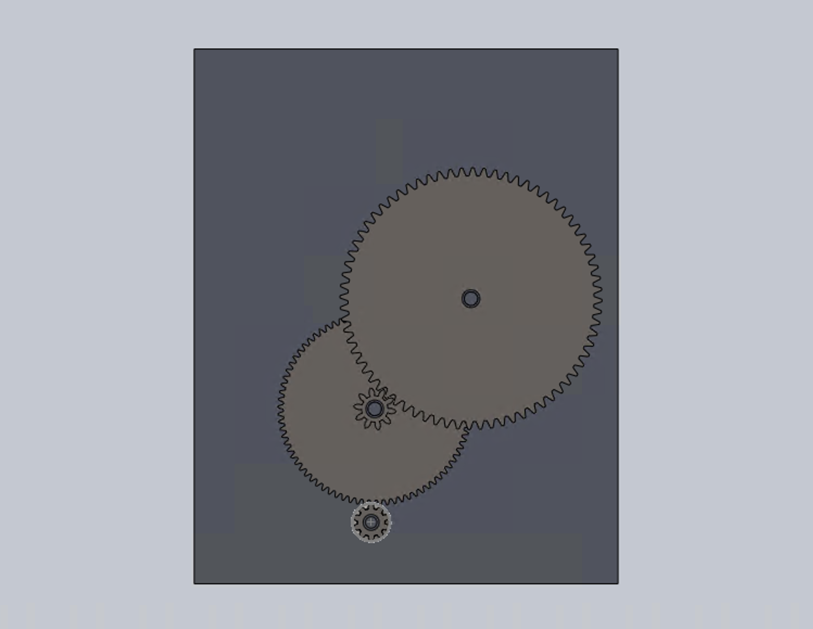

In this project, my team and I dissected a commercial can opener to study its mechanical components, focusing specifically on the gear mechanisms. The goal was to understand how the gear train translated user input into blade motion and to replicate its functionality using SolidWorks. This exercise allowed us to explore real-world applications of gear systems, study shaft attachments, and analyze constraints such as size, torque, and safety.
The dissection began with precise caliper measurements of the can opener, recording key features such as gear tooth counts, diameters, face widths, heights, and center-to-center distances. We also documented shaft attachment methods, supporting structures, and any other elements critical to the gear train’s function.
Using these measurements, the team created an initial CAD model of the gear train in SolidWorks. This model accurately replicated the original gear ratios and positions and included supporting shafts and attachment methods to ensure correct alignment and motion. Bearings, casings, and non-essential components were simplified to streamline the design process while maintaining functional fidelity.
Following the initial model, we developed a modified CAD design aimed at improving performance. Based on a hypothetical requirement to increase torque output by 25–50%, we redesigned gear dimensions and arrangements while keeping the overall footprint similar. Gear mates were added to ensure functional synchronization in the assembly.
  This task refined my technical and collaborative skills, providing valuable insights into the integration of mechanical components.